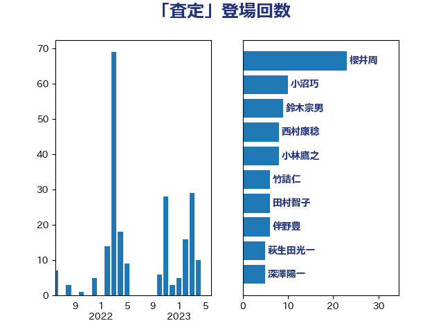

単語「査定」

| 櫻井周 | 立憲民主党 | 23 回 |
| 小沼巧 | 立憲民主党 | 10 回 |
| 鈴木宗男 | 日本維新の会 | 9 回 |
| 西村康稔 | 自由民主党 | 8 回 |
| 小林鷹之 | 自由民主党 | 8 回 |
| 竹詰仁 | 国民民主党 | 6 回 |
| 田村智子 | 日本共産党 | 6 回 |
| 伴野豊 | 立憲民主党 | 6 回 |
| 萩生田光一 | 自由民主党 | 5 回 |
| 深澤陽一 | 自由民主党 | 5 回 |
| 鈴木俊一 | 自由民主党 | 4 回 |
| 榛葉賀津也 | 国民民主党 | 4 回 |
| 杉尾秀哉 | 立憲民主党 | 4 回 |
| 岸田文雄 | 自由民主党 | 4 回 |
| 音喜多駿 | 日本維新の会 | 3 回 |
| 藤岡隆雄 | 立憲民主党 | 3 回 |
| 若松謙維 | 公明党 | 3 回 |
| 福島伸享 | 無所属 | 3 回 |
| 河野太郎 | 自由民主党 | 3 回 |
| 前原誠司 | 国民民主党 | 3 回 |
| 谷合正明 | 公明党 | 2 回 |
| 浅川義治 | 日本維新の会 | 2 回 |
| 梅村聡 | 日本維新の会 | 2 回 |
| 本村伸子 | 日本共産党 | 2 回 |
| 後藤祐一 | 立憲民主党 | 2 回 |
| 小川淳也 | 立憲民主党 | 2 回 |
| 勝部賢志 | 立憲民主党 | 2 回 |
| 上田清司 | 国民民主党 | 2 回 |
| 階猛 | 立憲民主党 | 1 回 |
| 鈴木敦 | 国民民主党 | 1 回 |
| 野村哲郎 | 自由民主党 | 1 回 |
| 進藤金日子 | 自由民主党 | 1 回 |
| 船橋利実 | 自由民主党 | 1 回 |
| 舞立昇治 | 自由民主党 | 1 回 |
| 緒方林太郎 | 無所属 | 1 回 |
| 福田昭夫 | 立憲民主党 | 1 回 |
| 神谷裕 | 立憲民主党 | 1 回 |
| 石井苗子 | 日本維新の会 | 1 回 |
| 石井正弘 | 自由民主党 | 1 回 |
| 田村貴昭 | 日本共産党 | 1 回 |
| 片山さつき | 自由民主党 | 1 回 |
| 横沢高徳 | 立憲民主党 | 1 回 |
| 松川るい | 自由民主党 | 1 回 |
| 有村治子 | 自由民主党 | 1 回 |
| 新垣邦男 | 立憲民主党 | 1 回 |
| 岡田直樹 | 自由民主党 | 1 回 |
| 岡本あき子 | 立憲民主党 | 1 回 |
| 山岡達丸 | 立憲民主党 | 1 回 |
| 小沢雅仁 | 立憲民主党 | 1 回 |
| 小森卓郎 | 自由民主党 | 1 回 |
| 守島正 | 日本維新の会 | 1 回 |
| 奥野総一郎 | 立憲民主党 | 1 回 |
| 大野泰正 | 自由民主党 | 1 回 |
| 大家敏志 | 自由民主党 | 1 回 |
| 堀井巌 | 自由民主党 | 1 回 |
| 和田政宗 | 自由民主党 | 1 回 |
| 原口一博 | 立憲民主党 | 1 回 |
| 住吉寛紀 | 日本維新の会 | 1 回 |
| 中村裕之 | 自由民主党 | 1 回 |
| 世耕弘成 | 自由民主党 | 1 回 |
| 上田英俊 | 自由民主党 | 1 回 |